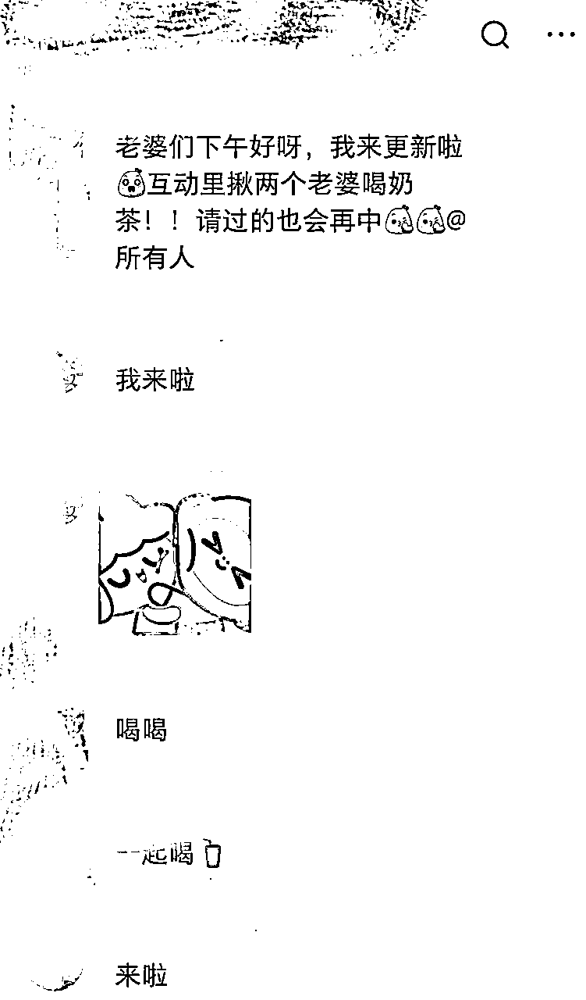
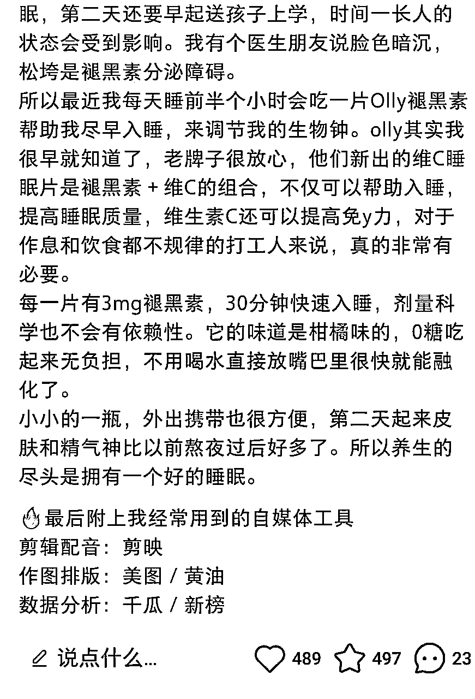
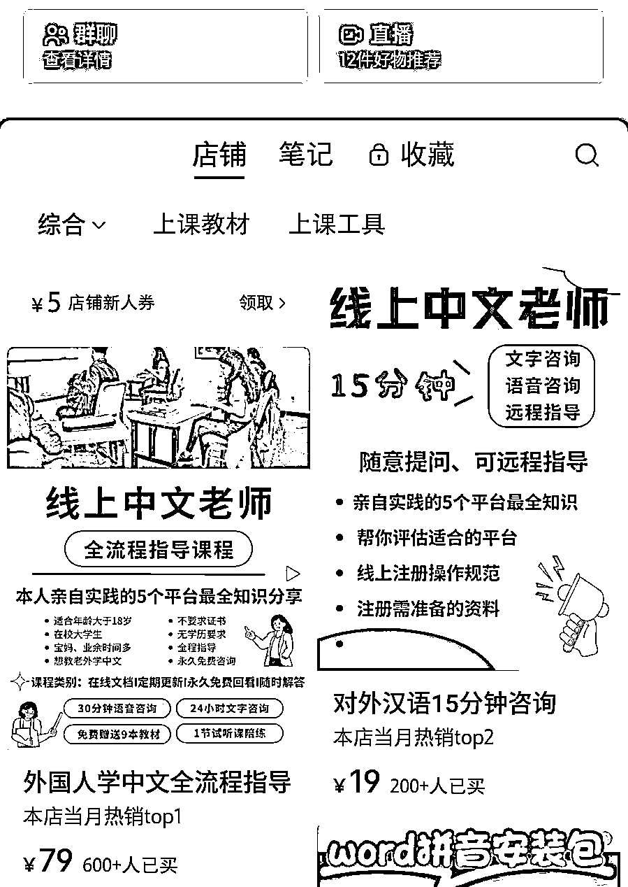
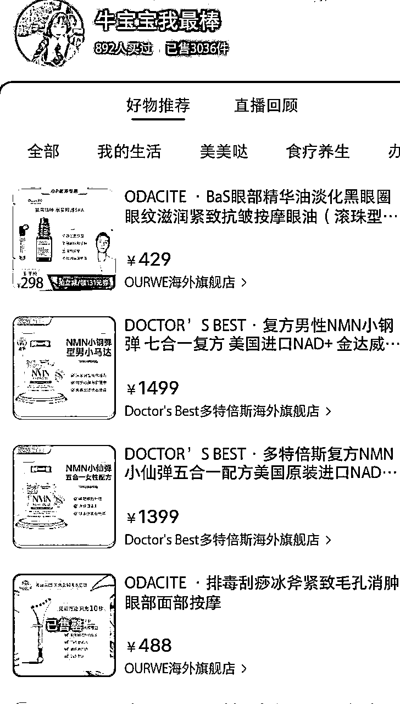
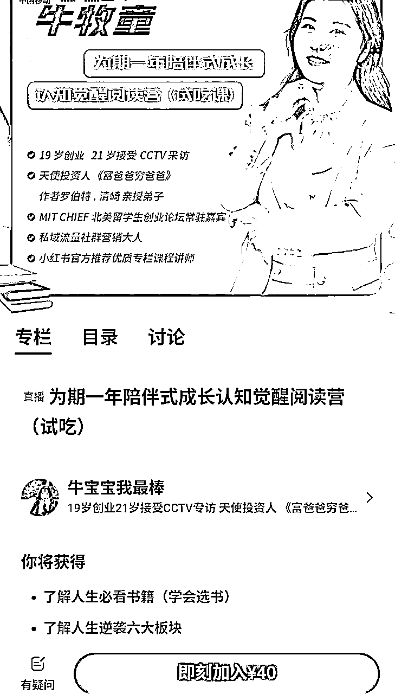
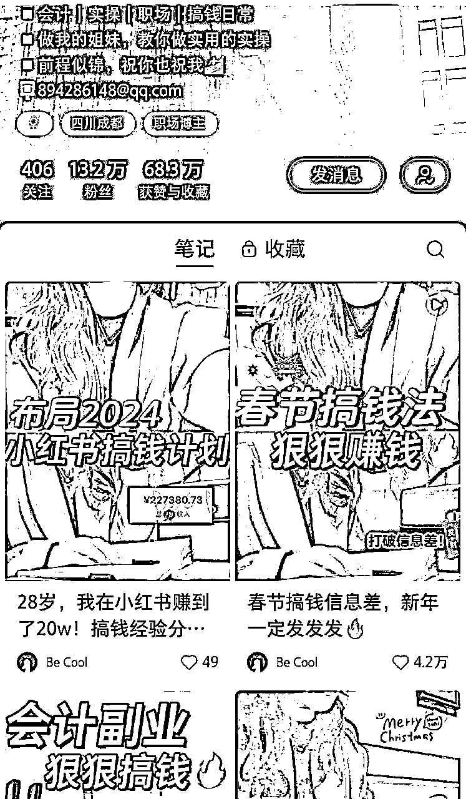
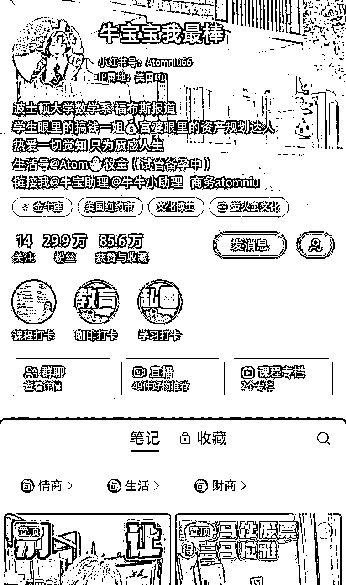
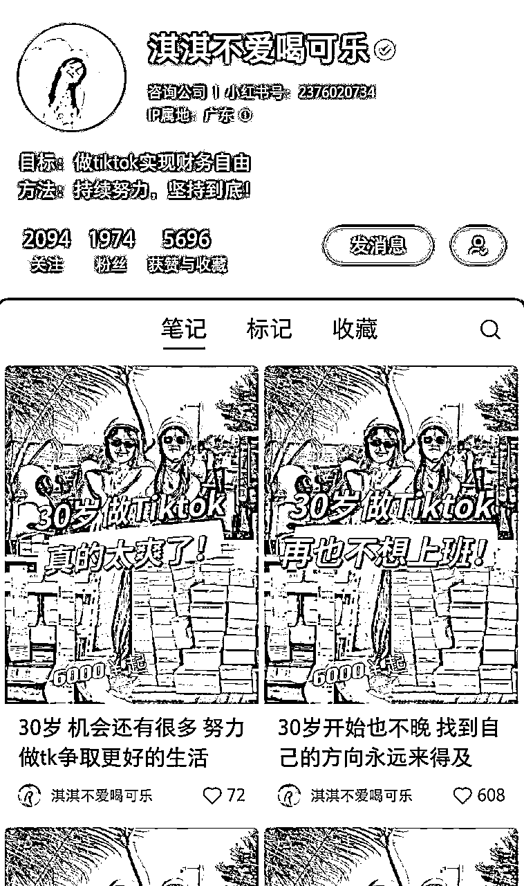
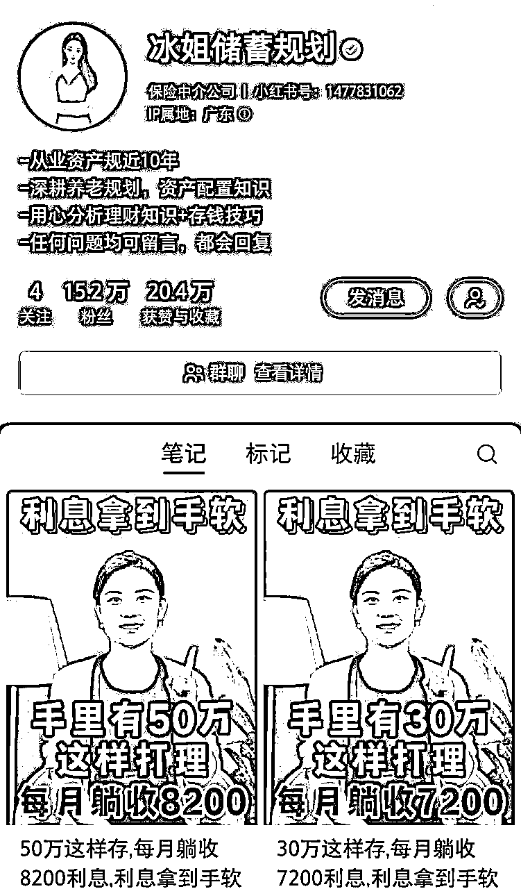

风向标拆解第 2 期--小红书教人赚钱的博主都在玩些什么--薛佑佑
来源：https://uvs3v85zsxf.feishu.cn/docx/WpGudV1CToT0gnx578BcM69WnWe
项目背景
各位爱搞钱的圈友们在小红书上一定刷到过或者正在做教人赚钱的账号！
“在家就能兼职赚美金！实操经验分享💰”
“做自媒体3年成功逆袭🤔️建议女生尝试做博主”
“月入五万在北京，下班做自媒体副业有多爽？”
那么这些赚钱博主自己靠什么赚钱？他们如何运营账号的？如何引流的？提供了什么样的产品？并且怎样交付的？
今天这篇文章就来细细拆解这些博主。
运营方式概述
账号类型
- 根据人群画像可将账号分类为：上班族副业类（包括通过技能变现的）、创业类（包括做店铺、做自媒体等）、理财类
- 经验传授：传授自己的变现方法。比如，会计副业能做什么兼职、翻译如何开发客户、如何写稿赚钱等、自己做自媒体的经验。
- 信息搬运：搬运一些创业赚钱信息差。比如自媒体经验、AI搞钱、小红书开店方法等。（很多会以我有一个朋友开头😀）
- 工作记录vlog/plog：记录自己的工作和生活的日常，定期晒晒工作成果，包括存款截图、收入截图等。
流量来源
通过笔记内容吸引人群。主页设置群聊、店铺、课程专栏等吸引用户点击。部分笔记会提及群聊、店铺、专栏等。部分账号会通过群聊引流至私域。
客户维系
- 小红书站内粉丝维系：创建小红书群，给评论的粉丝抽奖。既能维系粉丝，又能增加笔记评论数。

- 私域维系：发免费资料、建公益问答群、朋友圈发案例等。
产品
主要包括课程（大课、1v1陪跑等）、服务（账号诊断、理财规划等）、社群（读书群、女性成长群、打卡群等）。
变现方式概述
赚钱博主的变现方式可大致分为以下几种：接广告、卖课（小红书店铺火引流至私域）、直播带货和社群。
- 接广告：

- 卖课：

- 直播带货：

- 社群：

案例拆解：
类型1：上班族副业类

- 运营方式：这位博主主业是会计，会分享会计的工作经验、能做的副业和自媒体经验等，账号内容为视频和图文笔记相结合，不露脸。评论区会有会计吐槽工作、诉苦，流量精准。
类型2：赚钱信息差分享

- 运营方式：主页有直播好物链接、课程专栏链接。大部分笔记为真人出镜视频，少部分为图文笔记。会讲解一些赚钱信息，也会分享日常生活。
- 变现方式：直播带货（好物已售3k件）、财商课（998元6节，293人已购）、社群（阅读营，试听课40元1节，1036元已购）
类型3：创业

- 运营方式：名字设置成了个人IP的方式，但是加了蓝V的企业认证。每篇笔记都是图文笔记，用差不多的封面和标题。正文开头都是通过各种社会矛盾点吸引人，包括女性经济独立、上班打工工资低等。结尾会留下钩子说免费拿资料，笔记左下方有领取资料的选项，对方会发送微信二维码引流到私域。账号一共只有4篇笔记，但是有2k左右的粉丝，而且每篇数据看起来都还不错，评论区要资料和求带的很多。
类型4：理财

- 运营方式：笔记内容都是视频笔记，真人出镜介绍一些基础的理财知识和方法。会设置钩子，通过赠送资料的方法引流到私域。
- 变现方式：这个账号是有蓝V认证的，属于保险中介公司。引流到私域后会提供一些服务，比如资产翻倍增值方案等。
结论
赚钱博主能赚多少因账号而已，但分享总是有价值的。如果你在赚钱上已经取得了一定的成果，那么可以做一个账号去带领小白赚钱。如果你是一个赚钱小白的话，也可以做一个养成系赚钱博主。
另外，这几天一直在看搞钱、赚钱等类似话题下的爆款笔记，理解了爆款都是相似的，但也稍稍有点审美疲劳。以前我经常刷小红书渴望提升认知。但现在明白了，从输出吸粉的角度来讲，是要不断看爆款模仿爆款。如果想提升认知的话，刷小红书并不能带来认知突破。新的一年了，除工作需要看小红书外，有时间还是多看精华帖多读书吧。